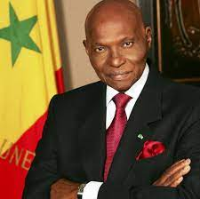

Date de naissance : 26 Mai 1926
. 1970 - 1971 : Doyen de la faculte de droit et des science economique de l'universite de dakar
. 1970 - 1978 : Membre du conseil economique et social,CES,President de la consielle economique des etudes Generales et synthese
. Depuis 1974 : Secretaire general national Fondateur du parie democratique du senegal
. 1978 - 1983 : Depute du senegal
. Avril 1991 - Octobre 1992 : Ministre d'etat de la Republique du Senegal
. Mars 1995 - Mars 1998 : Ministre d'etat Aupres du president de la republique du senegal
. 1955 - 1958 : Avocat Stagiaire au Barreau de Besancon , France
. 1958 - 1959 : Avocat Stagiaire au Barreau de Grenoble , France
. 1959 - 1966 : Charge d'enseignment puis Charge de cours a la faculte de droit et des science economique , Universite de Dakar
. 1971 - 1973 : Professeur a la faculte de droit et des science economique universite de dakar
. 1955 - 1958 : Avocat Stagiaire au Barreau de Besancon , France
. 1946 - 1947 : Diplome de fin d'etude Normales , Ecole normale federale William Pounty de l'Afrique de l'ouest, Sebekotane Dakar
. 1952 - 1957 : Certificat d'etude superieur de Mathematique Generales (Math Gene) , Faculte des science , Universite de Besancon France